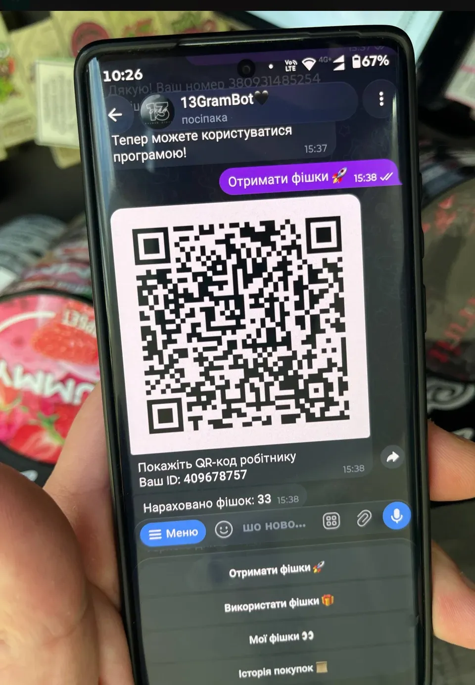
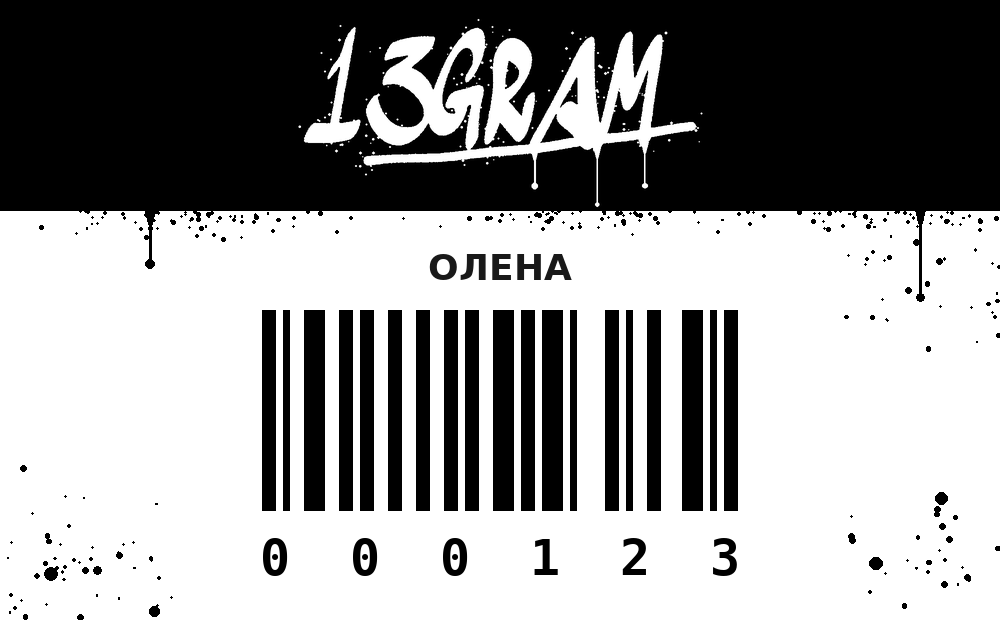

Кожен клієнт старого бота має перейти
Після вимкнення старого бота клієнт не побачить свої фішки, якщо не перейде.
Баланс зі старого бота переносимо в новий вручну. Клієнт нічого не втрачає, а отримує карту в Telegram, чеки й історію покупок.
Бачиш на касі старий бот або клієнт згадує фішки: одразу пропонуй перейти. Займає хвилину.
Перша покупка з новою картою зараховує клієнта тобі в «👥 нових клієнтів» у статистиці.
Перехід за 5 кроків
Нижче кожен крок з картинками.
- Старий бот: ID і балансКлієнт показує «Ваш ID» і «Мої фішки 👀».
- QR нового ботаКлієнт сканує QR камерою телефона або відкриває посилання.
- Реєстрація«Старт», «📱 Поділитися номером», «✅ Погоджуюсь». Карта приходить одразу.
- Надішли даніСтарий ID, баланс і нова карта адміністратору за шаблоном.
- Фішки нарахованоАдміністратор переносить баланс, клієнт отримує повідомлення в новому боті.
Старий бот: ID клієнта і баланс
Спочатку перепиши два числа зі старого бота 13GramBot.
- Попроси клієнта відкрити старий бот 13GramBot і натиснути «Отримати фішки 🚀». Під QR-кодом буде рядок «Ваш ID: …». Перепиши цей номер.
- Потім «Мої фішки 👀». Бот покаже баланс фішок. Перепиши число.
- Зручно: сфотографуй обидва екрани своїм телефоном, щоб нічого не переплутати.
«Нараховано фішок: 33» у старому боті означає фішки за останню покупку, а не баланс. Баланс дивись лише в «Мої фішки 👀».
Клієнт без фішок у старому боті: все одно переводимо, переносити просто нічого.

1 2Новий бот: реєстрація за 20 секунд
Клієнт реєструється сам, зі свого телефона і свого Telegram.
- Покажи клієнту QR нового бота. Клієнт наводить на нього камеру свого телефона і відкриває посилання. Або дай посилання t.me/easygramus_bot.
- У боті «Старт», потім «📱 Поділитися номером».
- «✅ Погоджуюсь, мені є 18». Бот одразу надішле карту з номером із 6 цифр.
- Перепиши номер нової карти. Наступні покупки клієнт робить уже з нею: F9 «Дисконт», сканер зчитує карту з екрана телефона.
Не реєструй клієнта зі свого телефона: карта має бути в Telegram самого клієнта.
Карта лояльності EASY SWAP прямо тут, у Telegram.
🎯 Фішки з кожної покупки
💸 1 фішка = 1 ₴ знижки
🧾 Чеки та історія в одному місці
Натисніть кнопку нижче, щоб отримати карту 👇

Покажіть штрихкод на касі або назвіть номер.
Що надіслати адміністратору
Одне повідомлення на кожного клієнта. Адміністратор перенесе фішки вручну.
Надішли адміністратору повідомлення за шаблоном і додай фото екрана «Мої фішки 👀» зі старого бота:
Адміністратор знайде клієнта в боті за новою картою і нарахує фішки. Клієнт одразу отримає повідомлення в новому боті.
Один клієнт, одне повідомлення. Так нічого не загубиться і не нарахується двічі.
Не обіцяй клієнту «бонус за перехід», якщо адміністратор його не оголошував: переносимо рівно баланс зі старого бота.
Баланс: 118 фішок (1 фішка = 1 ₴ знижки).
Що сказати клієнту
Коротко і впевнено.
«Старий бот скоро вимкнеться. Перейдімо в новий: це хвилина, і всі ваші фішки ми перенесемо».
«У новому боті карта прямо в Telegram, чек кожної покупки і історія. Брак повернемо без проблем, чек завжди у вас».
«Покажіть, будь ласка, „Мої фішки“ в старому боті, я запишу баланс».
Часті ситуації
Коротко, що робити.
- Клієнт уже зареєстрований у новому боті
- Новий бот напише «Ви вже зареєстровані». Візьми номер його карти в «💳 Карта клієнта» і надішли шаблон з ID і балансом зі старого бота.
- Клієнт не може відкрити старий бот
- Зареєструй його в новому боті і напиши адміністратору номер телефону клієнта та нову карту: адміністратор вирішить, скільки фішок перенести.
- У старому боті 0 фішок
- Переводимо все одно. Шаблон не потрібен, досить реєстрації в новому боті.
- Клієнт поспішає
- Хай зараз зареєструється за QR (20 секунд), а баланс зі старого бота покаже наступного разу.
- Камера не читає QR
- Хай знайде в пошуку Telegram @easygramus_bot або відкриє посилання t.me/easygramus_bot.